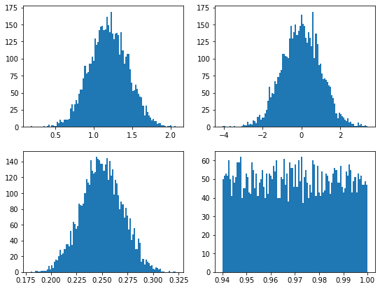
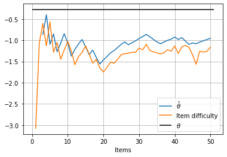
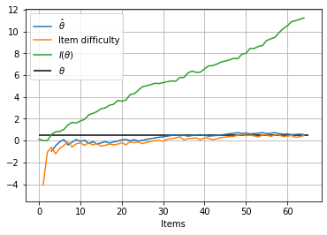

<!DOCTYPE html>
<html class="writer-html5" lang="en" >
<head>
  <meta charset="utf-8" />
  
  <meta name="viewport" content="width=device-width, initial-scale=1.0" />
  
  <title>Example usages</title>
  

  
  <link rel="stylesheet" href="_static/css/theme.css" type="text/css" />
  <link rel="stylesheet" href="_static/pygments.css" type="text/css" />
  <link rel="stylesheet" href="_static/css/custom.css" type="text/css" />

  
  
    <link rel="shortcut icon" href="_static/logo.svg"/>
  

  
  

  

  
  <!--[if lt IE 9]>
    <script src="_static/js/html5shiv.min.js"></script>
  <![endif]-->
  
    
      <script type="text/javascript" id="documentation_options" data-url_root="./" src="_static/documentation_options.js"></script>
        <script src="_static/jquery.js"></script>
        <script src="_static/underscore.js"></script>
        <script src="_static/doctools.js"></script>
        <script async="async" src="https://cdnjs.cloudflare.com/ajax/libs/mathjax/2.7.7/latest.js?config=TeX-AMS-MML_HTMLorMML"></script>
    
    <script type="text/javascript" src="_static/js/theme.js"></script>

    
    <link rel="index" title="Index" href="genindex.html" />
    <link rel="search" title="Search" href="search.html" />
    <link rel="next" title="Initialization Methods – catsim.initialization" href="initialization.html" />
    <link rel="prev" title="Introduction" href="introduction.html" /> 
</head>

<body class="wy-body-for-nav">

   
  <div class="wy-grid-for-nav">
    
    <nav data-toggle="wy-nav-shift" class="wy-nav-side">
      <div class="wy-side-scroll">
        <div class="wy-side-nav-search" >
          

          
            <a href="index.html">
          

          
            
            
          
          </a>

          
            
            
              <div class="version">
                0.17.0
              </div>
            
          

          
<div role="search">
  <form id="rtd-search-form" class="wy-form" action="search.html" method="get">
    <input type="text" name="q" placeholder="Search docs" />
    <input type="hidden" name="check_keywords" value="yes" />
    <input type="hidden" name="area" value="default" />
  </form>
</div>

          
        </div>

        
        <div class="wy-menu wy-menu-vertical" data-spy="affix" role="navigation" aria-label="main navigation">
          
            
            
              
            
            
              <ul class="current">
<li class="toctree-l1"><a class="reference internal" href="introduction.html">Introduction</a></li>
<li class="toctree-l1 current"><a class="current reference internal" href="#">Example usages</a><ul>
<li class="toctree-l2"><a class="reference internal" href="#generating-an-item-bank">Generating an item bank</a><ul>
<li class="toctree-l3"><a class="reference internal" href="#visualizing-parameter-distribution">Visualizing parameter distribution</a></li>
<li class="toctree-l3"><a class="reference internal" href="#visualizing-individual-items">Visualizing individual items</a></li>
</ul>
</li>
<li class="toctree-l2"><a class="reference internal" href="#running-simulations">Running simulations</a><ul>
<li class="toctree-l3"><a class="reference internal" href="#creating-a-simulator">Creating a simulator</a></li>
<li class="toctree-l3"><a class="reference internal" href="#starting-the-simulation">Starting the simulation</a></li>
<li class="toctree-l3"><a class="reference internal" href="#acessing-simulation-results">Acessing simulation results</a></li>
<li class="toctree-l3"><a class="reference internal" href="#simulation-example-2">Simulation example 2</a></li>
<li class="toctree-l3"><a class="reference internal" href="#simulating-non-adaptive-tests">Simulating non-adaptive tests</a></li>
</ul>
</li>
<li class="toctree-l2"><a class="reference internal" href="#using-catsim-objects-outside-of-a-simulator">Using catsim objects outside of a Simulator</a><ul>
<li class="toctree-l3"><a class="reference internal" href="#initializing-hat-theta">Initializing <span class="math notranslate nohighlight">\(\hat\theta\)</span></a></li>
<li class="toctree-l3"><a class="reference internal" href="#estimating-a-new-hat-theta">Estimating a new <span class="math notranslate nohighlight">\(\hat\theta\)</span></a></li>
<li class="toctree-l3"><a class="reference internal" href="#checking-whether-the-test-should-end">Checking whether the test should end</a></li>
<li class="toctree-l3"><a class="reference internal" href="#selecting-a-new-item">Selecting a new item</a></li>
<li class="toctree-l3"><a class="reference internal" href="#simulating-a-response">Simulating a response</a></li>
</ul>
</li>
</ul>
</li>
<li class="toctree-l1"><a class="reference internal" href="initialization.html">Initialization Methods – <code class="xref py py-mod docutils literal notranslate"><span class="pre">catsim.initialization</span></code></a></li>
<li class="toctree-l1"><a class="reference internal" href="selection.html">Item Selection Methods – <code class="xref py py-mod docutils literal notranslate"><span class="pre">catsim.selection</span></code></a></li>
<li class="toctree-l1"><a class="reference internal" href="estimation.html">Estimation Methods – <code class="xref py py-mod docutils literal notranslate"><span class="pre">catsim.estimation</span></code></a></li>
<li class="toctree-l1"><a class="reference internal" href="stopping.html">Stopping Criteria – <code class="xref py py-mod docutils literal notranslate"><span class="pre">catsim.stopping</span></code></a></li>
<li class="toctree-l1"><a class="reference internal" href="simulation.html">Computerized Adaptive Testing Simulation – <code class="xref py py-mod docutils literal notranslate"><span class="pre">catsim.simulation</span></code></a></li>
<li class="toctree-l1"><a class="reference internal" href="irt.html">Item Response Theory Functions – <code class="xref py py-mod docutils literal notranslate"><span class="pre">catsim.irt</span></code></a></li>
<li class="toctree-l1"><a class="reference internal" href="cat.html">Computerized Adaptive Test-related Functions – <code class="xref py py-mod docutils literal notranslate"><span class="pre">catsim.cat</span></code></a></li>
<li class="toctree-l1"><a class="reference internal" href="plot.html">Miscellaneous Plotting Functions – <code class="xref py py-mod docutils literal notranslate"><span class="pre">catsim.plot</span></code></a></li>
<li class="toctree-l1"><a class="reference internal" href="contributing.html">Contributing</a></li>
<li class="toctree-l1"><a class="reference internal" href="references.html">Bibliography</a></li>
</ul>

            
          
        </div>
        
      </div>
    </nav>

    <section data-toggle="wy-nav-shift" class="wy-nav-content-wrap">

      
      <nav class="wy-nav-top" aria-label="top navigation">
        
          <i data-toggle="wy-nav-top" class="fa fa-bars"></i>
          <a href="index.html">catsim</a>
        
      </nav>


      <div class="wy-nav-content">
        
        <div class="rst-content">
        
          


<div role="navigation" aria-label="breadcrumbs navigation">

  <ul class="wy-breadcrumbs">
    
      <li><a href="index.html" class="icon icon-home"></a> &raquo;</li>
        
      <li>Example usages</li>
    
    
      <li class="wy-breadcrumbs-aside">
        
          
            <a href="_sources/examples.rst.txt" rel="nofollow"> View page source</a>
          
        
      </li>
    
  </ul>

  
  <hr/>
</div>
          <div role="main" class="document" itemscope="itemscope" itemtype="http://schema.org/Article">
           <div itemprop="articleBody">
            
  <div class="section" id="example-usages">
<h1>Example usages<a class="headerlink" href="#example-usages" title="Permalink to this headline">¶</a></h1>
<p></p>
<p>This is a tutorial for
<a class="reference external" href="https://github.com/douglasrizzo/catsim/">catsim</a>, a Python package
which allows users to simulate computerized adaptive tests or to use in
their own applications with the purpose of automating adaptive tests.</p>
<p>This tutorial was originally developed as a notebook on Google Colab,
so, if for any reason you are seeing this outside of Colab, you can go
back to Colab, copy it and test it yourself using <a class="reference external" href="https://colab.research.google.com/drive/14zEWoDudBCXF0NO-qgzoQpWUGBcJ2lPH?usp=sharing">this
link</a>.</p>
<p>In this notebook, I’ll exemplify both approaches. The documentation of
all modules and functions used here are available in the <a class="reference external" href="https://douglasrizzo.com.br/catsim/index.html">catsim
website</a>.</p>
<p>First, let’s install catsim and import the relevant modules:</p>
<div class="highlight-default notranslate"><div class="highlight"><pre><span></span>!pip install -U catsim
</pre></div>
</div>
<div class="highlight-default notranslate"><div class="highlight"><pre><span></span>Collecting catsim
  Downloading https://files.pythonhosted.org/packages/af/46/a803430c2b1711c1793a7aad0ff878a36b0262f34c06a2bbef4156fd78f7/catsim-0.15.6.tar.gz
Requirement already satisfied, skipping upgrade: scipy in /usr/local/lib/python3.6/dist-packages (from catsim) (1.4.1)
Requirement already satisfied, skipping upgrade: numexpr in /usr/local/lib/python3.6/dist-packages (from catsim) (2.7.1)
Requirement already satisfied, skipping upgrade: matplotlib in /usr/local/lib/python3.6/dist-packages (from catsim) (3.2.2)
Requirement already satisfied, skipping upgrade: scikit-learn in /usr/local/lib/python3.6/dist-packages (from catsim) (0.22.2.post1)
Collecting json_tricks
  Downloading https://files.pythonhosted.org/packages/5f/09/603c6d30babd527df4851696ebeddce4b6a0bc6468f143b39094c97cd830/json_tricks-3.15.2-py2.py3-none-any.whl
Requirement already satisfied, skipping upgrade: tqdm in /usr/local/lib/python3.6/dist-packages (from catsim) (4.41.1)
Requirement already satisfied, skipping upgrade: numpy in /usr/local/lib/python3.6/dist-packages (from catsim) (1.18.5)
Requirement already satisfied, skipping upgrade: cycler&gt;=0.10 in /usr/local/lib/python3.6/dist-packages (from matplotlib-&gt;catsim) (0.10.0)
Requirement already satisfied, skipping upgrade: pyparsing!=2.0.4,!=2.1.2,!=2.1.6,&gt;=2.0.1 in /usr/local/lib/python3.6/dist-packages (from matplotlib-&gt;catsim) (2.4.7)
Requirement already satisfied, skipping upgrade: python-dateutil&gt;=2.1 in /usr/local/lib/python3.6/dist-packages (from matplotlib-&gt;catsim) (2.8.1)
Requirement already satisfied, skipping upgrade: kiwisolver&gt;=1.0.1 in /usr/local/lib/python3.6/dist-packages (from matplotlib-&gt;catsim) (1.2.0)
Requirement already satisfied, skipping upgrade: joblib&gt;=0.11 in /usr/local/lib/python3.6/dist-packages (from scikit-learn-&gt;catsim) (0.15.1)
Requirement already satisfied, skipping upgrade: six in /usr/local/lib/python3.6/dist-packages (from cycler&gt;=0.10-&gt;matplotlib-&gt;catsim) (1.12.0)
Building wheels for collected packages: catsim
  Building wheel for catsim (setup.py) ... [?25l[?25hdone
  Created wheel for catsim: filename=catsim-0.15.6-cp36-none-any.whl size=32830 sha256=08a8dc366e6722d039f738a2fc64a3faf8fe196729046e1da65380d21b52585a
  Stored in directory: /root/.cache/pip/wheels/a5/0f/5c/b18a1825e3918b7deaa0b90f1432053e7b41ea21537859e999
Successfully built catsim
Installing collected packages: json-tricks, catsim
Successfully installed catsim-0.15.6 json-tricks-3.15.2
</pre></div>
</div>
<div class="highlight-default notranslate"><div class="highlight"><pre><span></span><span class="c1"># this function generates an item bank, in case the user cannot provide one</span>
<span class="kn">from</span> <span class="nn">catsim.cat</span> <span class="kn">import</span> <span class="n">generate_item_bank</span>
<span class="c1"># simulation package contains the Simulator and all abstract classes</span>
<span class="kn">from</span> <span class="nn">catsim.simulation</span> <span class="kn">import</span> <span class="o">*</span>
<span class="c1"># initialization package contains different initial proficiency estimation strategies</span>
<span class="kn">from</span> <span class="nn">catsim.initialization</span> <span class="kn">import</span> <span class="o">*</span>
<span class="c1"># selection package contains different item selection strategies</span>
<span class="kn">from</span> <span class="nn">catsim.selection</span> <span class="kn">import</span> <span class="o">*</span>
<span class="c1"># estimation package contains different proficiency estimation methods</span>
<span class="kn">from</span> <span class="nn">catsim.estimation</span> <span class="kn">import</span> <span class="o">*</span>
<span class="c1"># stopping package contains different stopping criteria for the CAT</span>
<span class="kn">from</span> <span class="nn">catsim.stopping</span> <span class="kn">import</span> <span class="o">*</span>
<span class="kn">import</span> <span class="nn">catsim.plot</span> <span class="k">as</span> <span class="nn">catplot</span>
<span class="kn">from</span> <span class="nn">catsim.irt</span> <span class="kn">import</span> <span class="n">icc</span>

<span class="kn">import</span> <span class="nn">matplotlib.pyplot</span> <span class="k">as</span> <span class="nn">plt</span>
</pre></div>
</div>
<div class="section" id="generating-an-item-bank">
<h2>Generating an item bank<a class="headerlink" href="#generating-an-item-bank" title="Permalink to this headline">¶</a></h2>
<p>The <code class="docutils literal notranslate"><span class="pre">generate_item_bank()</span></code> function provides a convenient way to
generate realistic item parameter matrices from probability
distributions.</p>
<div class="highlight-default notranslate"><div class="highlight"><pre><span></span><span class="n">bank_size</span> <span class="o">=</span> <span class="mi">5000</span>
<span class="n">items</span> <span class="o">=</span> <span class="n">generate_item_bank</span><span class="p">(</span><span class="n">bank_size</span><span class="p">)</span>
<span class="n">catplot</span><span class="o">.</span><span class="n">gen3d_dataset_scatter</span><span class="p">(</span><span class="n">items</span><span class="p">)</span>
</pre></div>
</div>

<div class="section" id="visualizing-parameter-distribution">
<h3>Visualizing parameter distribution<a class="headerlink" href="#visualizing-parameter-distribution" title="Permalink to this headline">¶</a></h3>
<p><code class="docutils literal notranslate"><span class="pre">generate_item_bank()</span></code> returns a numpy.ndarray with 4 columns,
corresponding to the discrimination, difficulty, guessing and
upper-asymptote parameters of the 4-parameter logistic model of Item
Response Theory.</p>
<p>We can plot and visualize their distributions like so:</p>
<div class="highlight-default notranslate"><div class="highlight"><pre><span></span><span class="n">catplot</span><span class="o">.</span><span class="n">param_dist</span><span class="p">(</span><span class="n">items</span><span class="p">,</span> <span class="n">figsize</span><span class="o">=</span><span class="p">(</span><span class="mi">9</span><span class="p">,</span><span class="mi">7</span><span class="p">))</span>
</pre></div>
</div>

</div>
<div class="section" id="visualizing-individual-items">
<h3>Visualizing individual items<a class="headerlink" href="#visualizing-individual-items" title="Permalink to this headline">¶</a></h3>
<p>catsim also provides a function to plot the characteristic curve of an
item. Notice how this item has been generated according to the
4-parameter logistic model of the Item Response Theory. Item banks under
different logistic models can be generated by changing the <code class="docutils literal notranslate"><span class="pre">itemtype</span></code>
parameter of <code class="docutils literal notranslate"><span class="pre">generate_item_bank()</span></code>.</p>
<div class="highlight-default notranslate"><div class="highlight"><pre><span></span><span class="n">a</span><span class="p">,</span> <span class="n">b</span><span class="p">,</span> <span class="n">c</span><span class="p">,</span> <span class="n">d</span> <span class="o">=</span> <span class="n">items</span><span class="p">[</span><span class="mi">0</span><span class="p">]</span>
<span class="n">catplot</span><span class="o">.</span><span class="n">item_curve</span><span class="p">(</span><span class="n">a</span><span class="p">,</span><span class="n">b</span><span class="p">,</span><span class="n">c</span><span class="p">,</span><span class="n">d</span><span class="p">)</span>
</pre></div>
</div>

</div>
</div>
<div class="section" id="running-simulations">
<h2>Running simulations<a class="headerlink" href="#running-simulations" title="Permalink to this headline">¶</a></h2>
<p>A simulation requires the following objects:</p>
<ul class="simple">
<li><p>an item parameter matrix</p></li>
<li><p>a proficiency initializer, which sets the initial <span class="math notranslate nohighlight">\(\theta\)</span>
values for examinees</p></li>
<li><p>an item selector, which selects items to be applied to examinees
according to some rule</p></li>
<li><p>a proficiency estimator, which estimates the new <span class="math notranslate nohighlight">\(\theta\)</span>
values for examinees after an item is answered</p></li>
<li><p>a “stopper”, an object which checks if the test must be stopped
according to some rule</p></li>
</ul>
<p>We have already created an item parameter matrix, so let’s go ahead and
create the other objects…</p>
<div class="highlight-default notranslate"><div class="highlight"><pre><span></span><span class="n">initializer</span> <span class="o">=</span> <span class="n">RandomInitializer</span><span class="p">()</span>
<span class="n">selector</span> <span class="o">=</span> <span class="n">MaxInfoSelector</span><span class="p">()</span>
<span class="n">estimator</span> <span class="o">=</span> <span class="n">NumericalSearchEstimator</span><span class="p">()</span>
<span class="n">stopper</span> <span class="o">=</span> <span class="n">MaxItemStopper</span><span class="p">(</span><span class="mi">20</span><span class="p">)</span>
</pre></div>
</div>
<p>catsim provides different options for each of the aforementioned types
of objects in the following modules</p>
<ul class="simple">
<li><p><code class="docutils literal notranslate"><span class="pre">catsim.simulation</span></code></p></li>
<li><p><code class="docutils literal notranslate"><span class="pre">catsim.initialization</span></code></p></li>
<li><p><code class="docutils literal notranslate"><span class="pre">catsim.selection</span></code></p></li>
<li><p><code class="docutils literal notranslate"><span class="pre">catsim.estimation</span></code></p></li>
</ul>
<p>Each module also provides an abstract base class which can be inherited
in order to create new methods that can be used in the simulation
process.</p>
<div class="section" id="creating-a-simulator">
<h3>Creating a simulator<a class="headerlink" href="#creating-a-simulator" title="Permalink to this headline">¶</a></h3>
<p>The Simulator is the object that takes all of the objects created
previously and executes a CAT simulation. To represent the examinees,
The Simulator can receive either an integer, which will be converted to
a normal distribution, or a 1D <code class="docutils literal notranslate"><span class="pre">numpy.ndarray</span></code>, whose values will be
used as the proficiencies of the examinees.</p>
<p>Here we will use an integer.</p>
<div class="highlight-default notranslate"><div class="highlight"><pre><span></span><span class="n">s</span> <span class="o">=</span> <span class="n">Simulator</span><span class="p">(</span><span class="n">items</span><span class="p">,</span> <span class="mi">10</span><span class="p">,</span> <span class="n">RandomInitializer</span><span class="p">(),</span> <span class="n">MaxInfoSelector</span><span class="p">(),</span> <span class="n">NumericalSearchEstimator</span><span class="p">(),</span> <span class="n">MaxItemStopper</span><span class="p">(</span><span class="mi">50</span><span class="p">))</span>
</pre></div>
</div>
</div>
<div class="section" id="starting-the-simulation">
<h3>Starting the simulation<a class="headerlink" href="#starting-the-simulation" title="Permalink to this headline">¶</a></h3>
<p>To execute the simulations, call the simulate() method of the Simulator
object.</p>
<div class="highlight-default notranslate"><div class="highlight"><pre><span></span><span class="n">s</span><span class="o">.</span><span class="n">simulate</span><span class="p">(</span><span class="n">verbose</span><span class="o">=</span><span class="kc">True</span><span class="p">)</span>
</pre></div>
</div>
<div class="highlight-default notranslate"><div class="highlight"><pre><span></span>Starting simulation: Random Initializer Maximum Information Selector Hill Climbing Estimator Maximum Item Number Initializer 5000 items
100%|██████████| 10/10 [00:05&lt;00:00,  1.72it/s]

Simulation took 5.8171546459198 seconds
</pre></div>
</div>
</div>
<div class="section" id="acessing-simulation-results">
<h3>Acessing simulation results<a class="headerlink" href="#acessing-simulation-results" title="Permalink to this headline">¶</a></h3>
<p>After the simulation if over, information is provided through the
attributes of the Simulator:</p>
<div class="highlight-default notranslate"><div class="highlight"><pre><span></span><span class="nb">print</span><span class="p">(</span><span class="s1">&#39;Bias:&#39;</span><span class="p">,</span> <span class="n">s</span><span class="o">.</span><span class="n">bias</span><span class="p">)</span>
<span class="nb">print</span><span class="p">(</span><span class="s1">&#39;Mean squared error:&#39;</span><span class="p">,</span> <span class="n">s</span><span class="o">.</span><span class="n">mse</span><span class="p">)</span>
<span class="nb">print</span><span class="p">(</span><span class="s1">&#39;Root mean squared error:&#39;</span><span class="p">,</span> <span class="n">s</span><span class="o">.</span><span class="n">rmse</span><span class="p">)</span>
</pre></div>
</div>
<div class="highlight-default notranslate"><div class="highlight"><pre><span></span><span class="n">Bias</span><span class="p">:</span> <span class="o">-</span><span class="mf">0.12877908953331357</span>
<span class="n">Mean</span> <span class="n">squared</span> <span class="n">error</span><span class="p">:</span> <span class="mf">0.10927905639507059</span>
<span class="n">Root</span> <span class="n">mean</span> <span class="n">squared</span> <span class="n">error</span><span class="p">:</span> <span class="mf">0.33057382896271537</span>
</pre></div>
</div>
<p>Information for individual examinees can also be accessed through the
attributes of the Simulator.</p>
<div class="highlight-default notranslate"><div class="highlight"><pre><span></span><span class="n">examinee_index</span> <span class="o">=</span> <span class="mi">0</span>
<span class="nb">print</span><span class="p">(</span><span class="s1">&#39;Accessing examinee&#39;</span><span class="p">,</span> <span class="n">examinee_index</span><span class="p">,</span> <span class="s1">&#39;results...&#39;</span><span class="p">)</span>
<span class="nb">print</span><span class="p">(</span><span class="s1">&#39;    True proficiency:&#39;</span><span class="p">,</span> <span class="n">s</span><span class="o">.</span><span class="n">examinees</span><span class="p">[</span><span class="n">examinee_index</span><span class="p">])</span>
<span class="nb">print</span><span class="p">(</span><span class="s1">&#39;    Items administered:&#39;</span><span class="p">,</span> <span class="n">s</span><span class="o">.</span><span class="n">administered_items</span><span class="p">[</span><span class="n">examinee_index</span><span class="p">])</span>
<span class="nb">print</span><span class="p">(</span><span class="s1">&#39;    Responses:&#39;</span><span class="p">,</span> <span class="n">s</span><span class="o">.</span><span class="n">response_vectors</span><span class="p">[</span><span class="n">examinee_index</span><span class="p">])</span>
<span class="nb">print</span><span class="p">(</span><span class="s1">&#39;    Proficiency estimation during each step of the test:&#39;</span><span class="p">,</span> <span class="n">s</span><span class="o">.</span><span class="n">estimations</span><span class="p">[</span><span class="n">examinee_index</span><span class="p">])</span>
</pre></div>
</div>
<div class="highlight-default notranslate"><div class="highlight"><pre><span></span><span class="n">Accessing</span> <span class="n">examinee</span> <span class="mi">0</span> <span class="n">results</span><span class="o">...</span>
    <span class="kc">True</span> <span class="n">proficiency</span><span class="p">:</span> <span class="o">-</span><span class="mf">0.2816785228767416</span>
    <span class="n">Items</span> <span class="n">administered</span><span class="p">:</span> <span class="p">[</span><span class="mi">1794</span><span class="p">,</span> <span class="mi">0</span><span class="p">,</span> <span class="mi">3336</span><span class="p">,</span> <span class="mi">2475</span><span class="p">,</span> <span class="mi">1879</span><span class="p">,</span> <span class="mi">1768</span><span class="p">,</span> <span class="mi">4025</span><span class="p">,</span> <span class="mi">1222</span><span class="p">,</span> <span class="mi">900</span><span class="p">,</span> <span class="mi">2399</span><span class="p">,</span> <span class="mi">3556</span><span class="p">,</span> <span class="mi">2287</span><span class="p">,</span> <span class="mi">2485</span><span class="p">,</span> <span class="mi">1273</span><span class="p">,</span> <span class="mi">2391</span><span class="p">,</span> <span class="mi">3442</span><span class="p">,</span> <span class="mi">70</span><span class="p">,</span> <span class="mi">1724</span><span class="p">,</span> <span class="mi">3589</span><span class="p">,</span> <span class="mi">1585</span><span class="p">,</span> <span class="mi">2230</span><span class="p">,</span> <span class="mi">3714</span><span class="p">,</span> <span class="mi">2044</span><span class="p">,</span> <span class="mi">543</span><span class="p">,</span> <span class="mi">996</span><span class="p">,</span> <span class="mi">2692</span><span class="p">,</span> <span class="mi">2566</span><span class="p">,</span> <span class="mi">3316</span><span class="p">,</span> <span class="mi">1243</span><span class="p">,</span> <span class="mi">516</span><span class="p">,</span> <span class="mi">90</span><span class="p">,</span> <span class="mi">4784</span><span class="p">,</span> <span class="mi">2893</span><span class="p">,</span> <span class="mi">4075</span><span class="p">,</span> <span class="mi">2514</span><span class="p">,</span> <span class="mi">3916</span><span class="p">,</span> <span class="mi">3281</span><span class="p">,</span> <span class="mi">4946</span><span class="p">,</span> <span class="mi">3961</span><span class="p">,</span> <span class="mi">2174</span><span class="p">,</span> <span class="mi">441</span><span class="p">,</span> <span class="mi">3505</span><span class="p">,</span> <span class="mi">142</span><span class="p">,</span> <span class="mi">4108</span><span class="p">,</span> <span class="mi">4039</span><span class="p">,</span> <span class="mi">3970</span><span class="p">,</span> <span class="mi">3866</span><span class="p">,</span> <span class="mi">4659</span><span class="p">,</span> <span class="mi">1801</span><span class="p">,</span> <span class="mi">3128</span><span class="p">]</span>
    <span class="n">Responses</span><span class="p">:</span> <span class="p">[</span><span class="kc">True</span><span class="p">,</span> <span class="kc">True</span><span class="p">,</span> <span class="kc">False</span><span class="p">,</span> <span class="kc">True</span><span class="p">,</span> <span class="kc">False</span><span class="p">,</span> <span class="kc">True</span><span class="p">,</span> <span class="kc">False</span><span class="p">,</span> <span class="kc">True</span><span class="p">,</span> <span class="kc">True</span><span class="p">,</span> <span class="kc">False</span><span class="p">,</span> <span class="kc">False</span><span class="p">,</span> <span class="kc">True</span><span class="p">,</span> <span class="kc">True</span><span class="p">,</span> <span class="kc">True</span><span class="p">,</span> <span class="kc">False</span><span class="p">,</span> <span class="kc">False</span><span class="p">,</span> <span class="kc">True</span><span class="p">,</span> <span class="kc">False</span><span class="p">,</span> <span class="kc">False</span><span class="p">,</span> <span class="kc">True</span><span class="p">,</span> <span class="kc">True</span><span class="p">,</span> <span class="kc">True</span><span class="p">,</span> <span class="kc">True</span><span class="p">,</span> <span class="kc">True</span><span class="p">,</span> <span class="kc">True</span><span class="p">,</span> <span class="kc">True</span><span class="p">,</span> <span class="kc">False</span><span class="p">,</span> <span class="kc">True</span><span class="p">,</span> <span class="kc">True</span><span class="p">,</span> <span class="kc">True</span><span class="p">,</span> <span class="kc">True</span><span class="p">,</span> <span class="kc">True</span><span class="p">,</span> <span class="kc">False</span><span class="p">,</span> <span class="kc">False</span><span class="p">,</span> <span class="kc">False</span><span class="p">,</span> <span class="kc">False</span><span class="p">,</span> <span class="kc">True</span><span class="p">,</span> <span class="kc">True</span><span class="p">,</span> <span class="kc">True</span><span class="p">,</span> <span class="kc">True</span><span class="p">,</span> <span class="kc">False</span><span class="p">,</span> <span class="kc">True</span><span class="p">,</span> <span class="kc">False</span><span class="p">,</span> <span class="kc">False</span><span class="p">,</span> <span class="kc">True</span><span class="p">,</span> <span class="kc">False</span><span class="p">,</span> <span class="kc">True</span><span class="p">,</span> <span class="kc">True</span><span class="p">,</span> <span class="kc">True</span><span class="p">,</span> <span class="kc">True</span><span class="p">]</span>
    <span class="n">Proficiency</span> <span class="n">estimation</span> <span class="n">during</span> <span class="n">each</span> <span class="n">step</span> <span class="n">of</span> <span class="n">the</span> <span class="n">test</span><span class="p">:</span> <span class="p">[</span><span class="o">-</span><span class="mf">2.9062367750482476</span><span class="p">,</span> <span class="n">inf</span><span class="p">,</span> <span class="n">inf</span><span class="p">,</span> <span class="o">-</span><span class="mf">0.8645929540106936</span><span class="p">,</span> <span class="o">-</span><span class="mf">0.4000937535082434</span><span class="p">,</span> <span class="o">-</span><span class="mf">1.0984746111118635</span><span class="p">,</span> <span class="o">-</span><span class="mf">0.8523400481400345</span><span class="p">,</span> <span class="o">-</span><span class="mf">1.2698782015572956</span><span class="p">,</span> <span class="o">-</span><span class="mf">1.0729249779445948</span><span class="p">,</span> <span class="o">-</span><span class="mf">0.8448001617230141</span><span class="p">,</span> <span class="o">-</span><span class="mf">1.065419646674027</span><span class="p">,</span> <span class="o">-</span><span class="mf">1.3754326555875702</span><span class="p">,</span> <span class="o">-</span><span class="mf">1.2138690054229484</span><span class="p">,</span> <span class="o">-</span><span class="mf">1.0891772226836556</span><span class="p">,</span> <span class="o">-</span><span class="mf">0.9819440114965495</span><span class="p">,</span> <span class="o">-</span><span class="mf">1.154819511564105</span><span class="p">,</span> <span class="o">-</span><span class="mf">1.339700019932513</span><span class="p">,</span> <span class="o">-</span><span class="mf">1.2320382801141416</span><span class="p">,</span> <span class="o">-</span><span class="mf">1.4062619544561699</span><span class="p">,</span> <span class="o">-</span><span class="mf">1.5579952313912742</span><span class="p">,</span> <span class="o">-</span><span class="mf">1.4617917667004856</span><span class="p">,</span> <span class="o">-</span><span class="mf">1.384430722645969</span><span class="p">,</span> <span class="o">-</span><span class="mf">1.2949916487176605</span><span class="p">,</span> <span class="o">-</span><span class="mf">1.2409486213125227</span><span class="p">,</span> <span class="o">-</span><span class="mf">1.1706229487693933</span><span class="p">,</span> <span class="o">-</span><span class="mf">1.0933573080599417</span><span class="p">,</span> <span class="o">-</span><span class="mf">1.0404774627310964</span><span class="p">,</span> <span class="o">-</span><span class="mf">1.105931582126757</span><span class="p">,</span> <span class="o">-</span><span class="mf">1.0610697847401798</span><span class="p">,</span> <span class="o">-</span><span class="mf">1.014087695805288</span><span class="p">,</span> <span class="o">-</span><span class="mf">0.9576764350218117</span><span class="p">,</span> <span class="o">-</span><span class="mf">0.9143005089326925</span><span class="p">,</span> <span class="o">-</span><span class="mf">0.8608950194549864</span><span class="p">,</span> <span class="o">-</span><span class="mf">0.9180361878629862</span><span class="p">,</span> <span class="o">-</span><span class="mf">0.9784988359602548</span><span class="p">,</span> <span class="o">-</span><span class="mf">1.039387055887484</span><span class="p">,</span> <span class="o">-</span><span class="mf">1.0826369520017567</span><span class="p">,</span> <span class="o">-</span><span class="mf">1.0414606979162682</span><span class="p">,</span> <span class="o">-</span><span class="mf">1.0025638352769068</span><span class="p">,</span> <span class="o">-</span><span class="mf">0.9729843792641382</span><span class="p">,</span> <span class="o">-</span><span class="mf">0.9241130070522614</span><span class="p">,</span> <span class="o">-</span><span class="mf">0.9815002657882789</span><span class="p">,</span> <span class="o">-</span><span class="mf">0.9374991266848149</span><span class="p">,</span> <span class="o">-</span><span class="mf">1.020429275472375</span><span class="p">,</span> <span class="o">-</span><span class="mf">1.0972120361274151</span><span class="p">,</span> <span class="o">-</span><span class="mf">1.0633721669862448</span><span class="p">,</span> <span class="o">-</span><span class="mf">1.083039048251386</span><span class="p">,</span> <span class="o">-</span><span class="mf">1.043512265559606</span><span class="p">,</span> <span class="o">-</span><span class="mf">1.0135620128739955</span><span class="p">,</span> <span class="o">-</span><span class="mf">0.9841406046060365</span><span class="p">,</span> <span class="o">-</span><span class="mf">0.9537218651754478</span><span class="p">]</span>
</pre></div>
</div>
<p>The test progress for an individual examinee can also be plotted using
the <code class="docutils literal notranslate"><span class="pre">catsim.plot.test_progress(function)</span></code>. The amount of information
in the chart can be tuned using different arguments for the function.</p>
<div class="highlight-default notranslate"><div class="highlight"><pre><span></span><span class="n">catplot</span><span class="o">.</span><span class="n">test_progress</span><span class="p">(</span><span class="n">simulator</span><span class="o">=</span><span class="n">s</span><span class="p">,</span><span class="n">index</span><span class="o">=</span><span class="mi">0</span><span class="p">)</span>
</pre></div>
</div>

</div>
<div class="section" id="simulation-example-2">
<h3>Simulation example 2<a class="headerlink" href="#simulation-example-2" title="Permalink to this headline">¶</a></h3>
<p>This example uses a <code class="docutils literal notranslate"><span class="pre">numpy.ndarray</span></code> to represent examinees. We will
also plot more information than before in our test progress plot, adding
test information to it.</p>
<div class="highlight-default notranslate"><div class="highlight"><pre><span></span><span class="n">examinees</span> <span class="o">=</span> <span class="n">numpy</span><span class="o">.</span><span class="n">random</span><span class="o">.</span><span class="n">normal</span><span class="p">(</span><span class="n">size</span><span class="o">=</span><span class="mi">10</span><span class="p">)</span>
<span class="n">s</span> <span class="o">=</span> <span class="n">Simulator</span><span class="p">(</span><span class="n">items</span><span class="p">,</span> <span class="n">examinees</span><span class="p">,</span> <span class="n">RandomInitializer</span><span class="p">(),</span> <span class="n">MaxInfoSelector</span><span class="p">(),</span> <span class="n">NumericalSearchEstimator</span><span class="p">(),</span> <span class="n">MinErrorStopper</span><span class="p">(</span><span class="o">.</span><span class="mi">3</span><span class="p">))</span>
<span class="n">s</span><span class="o">.</span><span class="n">simulate</span><span class="p">(</span><span class="n">verbose</span><span class="o">=</span><span class="kc">True</span><span class="p">)</span>
<span class="n">catplot</span><span class="o">.</span><span class="n">test_progress</span><span class="p">(</span><span class="n">simulator</span><span class="o">=</span><span class="n">s</span><span class="p">,</span><span class="n">index</span><span class="o">=</span><span class="mi">0</span><span class="p">,</span> <span class="n">info</span><span class="o">=</span><span class="kc">True</span><span class="p">)</span>
</pre></div>
</div>
<div class="highlight-default notranslate"><div class="highlight"><pre><span></span>Starting simulation: Random Initializer Maximum Information Selector Hill Climbing Estimator Minimum Error Initializer 5000 items

python3.6/dist-packages/catsim/irt.py:142: RuntimeWarning: divide by zero encountered in double_scalars
  return 1 / test_info(theta, items)
100%|██████████| 10/10 [00:07&lt;00:00,  1.33it/s]
</pre></div>
</div>
<div class="highlight-default notranslate"><div class="highlight"><pre><span></span><span class="n">Simulation</span> <span class="n">took</span> <span class="mf">7.508302450180054</span> <span class="n">seconds</span>
</pre></div>
</div>

</div>
<div class="section" id="simulating-non-adaptive-tests">
<h3>Simulating non-adaptive tests<a class="headerlink" href="#simulating-non-adaptive-tests" title="Permalink to this headline">¶</a></h3>
<p>catsim can also simulate linear (non-adaptive) tests by using a linear
item selector. The linear selector receives the item indices as
arguments, retrieves them from the item parameter matrix and applies
them in order to all examinees.</p>
<div class="highlight-default notranslate"><div class="highlight"><pre><span></span><span class="n">indexes</span> <span class="o">=</span> <span class="n">numpy</span><span class="o">.</span><span class="n">random</span><span class="o">.</span><span class="n">choice</span><span class="p">(</span><span class="n">items</span><span class="o">.</span><span class="n">shape</span><span class="p">[</span><span class="mi">0</span><span class="p">],</span> <span class="mi">50</span><span class="p">,</span> <span class="n">replace</span><span class="o">=</span><span class="kc">False</span><span class="p">)</span>
<span class="nb">print</span><span class="p">(</span><span class="s1">&#39;The following items will be applied to the examinees in this order:&#39;</span><span class="p">,</span> <span class="n">indexes</span><span class="p">)</span>
<span class="n">s</span> <span class="o">=</span> <span class="n">Simulator</span><span class="p">(</span><span class="n">items</span><span class="p">,</span> <span class="mi">10</span><span class="p">,</span> <span class="n">RandomInitializer</span><span class="p">(),</span> <span class="n">LinearSelector</span><span class="p">(</span><span class="n">indexes</span><span class="p">),</span> <span class="n">NumericalSearchEstimator</span><span class="p">(),</span> <span class="n">MaxItemStopper</span><span class="p">(</span><span class="mi">50</span><span class="p">))</span>
<span class="n">s</span><span class="o">.</span><span class="n">simulate</span><span class="p">(</span><span class="n">verbose</span><span class="o">=</span><span class="kc">True</span><span class="p">)</span>
</pre></div>
</div>
<div class="highlight-default notranslate"><div class="highlight"><pre><span></span>The following items will be applied to the examinees in this order: [4869 2944 2371 2000  721  920 4166 1933 3127 1938 4922 2814 4624 1828
  521 3600 1830 2676 3323 4494 1114 4700  549 2997 1463 1955 2639 2975
 3313 4093 4930 4368  292 2531 3767  228 1202  554 4671  310 1294 2387
  142 3150 2717 4207  885 4440  600 1128]

Starting simulation: Random Initializer Linear Selector Hill Climbing Estimator Maximum Item Number Initializer 5000 items

100%|██████████| 10/10 [00:02&lt;00:00,  4.76it/s]

Simulation took 2.101578950881958 seconds
</pre></div>
</div>
<p>Here, we will also plot the estimation error for an examinee’s
<span class="math notranslate nohighlight">\(\hat\theta\)</span> value during the progress of the test.</p>
<div class="highlight-default notranslate"><div class="highlight"><pre><span></span><span class="n">catplot</span><span class="o">.</span><span class="n">test_progress</span><span class="p">(</span><span class="n">simulator</span><span class="o">=</span><span class="n">s</span><span class="p">,</span><span class="n">index</span><span class="o">=</span><span class="mi">0</span><span class="p">,</span> <span class="n">info</span><span class="o">=</span><span class="kc">True</span><span class="p">,</span> <span class="n">see</span><span class="o">=</span><span class="kc">True</span><span class="p">)</span>
</pre></div>
</div>
<div class="highlight-default notranslate"><div class="highlight"><pre><span></span><span class="o">/</span><span class="n">usr</span><span class="o">/</span><span class="n">local</span><span class="o">/</span><span class="n">lib</span><span class="o">/</span><span class="n">python3</span><span class="o">.</span><span class="mi">6</span><span class="o">/</span><span class="n">dist</span><span class="o">-</span><span class="n">packages</span><span class="o">/</span><span class="n">catsim</span><span class="o">/</span><span class="n">irt</span><span class="o">.</span><span class="n">py</span><span class="p">:</span><span class="mi">142</span><span class="p">:</span> <span class="ne">RuntimeWarning</span><span class="p">:</span> <span class="n">divide</span> <span class="n">by</span> <span class="n">zero</span> <span class="n">encountered</span> <span class="ow">in</span> <span class="n">double_scalars</span>
  <span class="k">return</span> <span class="mi">1</span> <span class="o">/</span> <span class="n">test_info</span><span class="p">(</span><span class="n">theta</span><span class="p">,</span> <span class="n">items</span><span class="p">)</span>
</pre></div>
</div>

</div>
</div>
<div class="section" id="using-catsim-objects-outside-of-a-simulator">
<h2>Using catsim objects outside of a Simulator<a class="headerlink" href="#using-catsim-objects-outside-of-a-simulator" title="Permalink to this headline">¶</a></h2>
<p>The objects provided by catsim can also be used directly, outside of a
simulation. This allows users to use these objects in their own
software, to power their own CAT applications.</p>
<p>Let’s pretend we are in the middle of a test application and create some
dummy data for an examinee, as well as some objects we will use to
select the next item for this examinee, re-estimate their proficiency
and check if the test should be stopped or if a new item should be
applied to the examinee.</p>
<div class="highlight-default notranslate"><div class="highlight"><pre><span></span><span class="n">responses</span> <span class="o">=</span> <span class="p">[</span><span class="kc">True</span><span class="p">,</span> <span class="kc">True</span><span class="p">,</span> <span class="kc">False</span><span class="p">,</span> <span class="kc">False</span><span class="p">]</span>
<span class="n">administered_items</span> <span class="o">=</span> <span class="p">[</span><span class="mi">1435</span><span class="p">,</span> <span class="mi">3221</span><span class="p">,</span> <span class="mi">17</span><span class="p">,</span> <span class="mi">881</span><span class="p">]</span>

<span class="n">initializer</span> <span class="o">=</span> <span class="n">RandomInitializer</span><span class="p">()</span>
<span class="n">selector</span> <span class="o">=</span> <span class="n">MaxInfoSelector</span><span class="p">()</span>
<span class="n">estimator</span> <span class="o">=</span> <span class="n">NumericalSearchEstimator</span><span class="p">()</span>
<span class="n">stopper</span> <span class="o">=</span> <span class="n">MaxItemStopper</span><span class="p">(</span><span class="mi">20</span><span class="p">)</span>
</pre></div>
</div>
<p>This dummy data means that the examinee has answered items 1435, 3221,
17 and 881 from our item bank (generated at the start of this notebook).
They have answered the first two items correctly (represented by the
<code class="docutils literal notranslate"><span class="pre">True</span></code> values in the <code class="docutils literal notranslate"><span class="pre">responses</span></code> list) and two items incorrectly
(the last values in the list).</p>
<div class="section" id="initializing-hat-theta">
<h3>Initializing <span class="math notranslate nohighlight">\(\hat\theta\)</span><a class="headerlink" href="#initializing-hat-theta" title="Permalink to this headline">¶</a></h3>
<p>Even though this information is already enough to estimate the current
proficiency of the examinee, we’ll go ahead and use our initializer to
estimate a dummy initial proficiency anyway.</p>
<div class="highlight-default notranslate"><div class="highlight"><pre><span></span><span class="n">est_theta</span> <span class="o">=</span> <span class="n">initializer</span><span class="o">.</span><span class="n">initialize</span><span class="p">()</span>
<span class="nb">print</span><span class="p">(</span><span class="s1">&#39;Examinee initial proficiency:&#39;</span><span class="p">,</span> <span class="n">est_theta</span><span class="p">)</span>
</pre></div>
</div>
<div class="highlight-default notranslate"><div class="highlight"><pre><span></span><span class="n">Examinee</span> <span class="n">initial</span> <span class="n">proficiency</span><span class="p">:</span> <span class="mf">2.5662180237120156</span>
</pre></div>
</div>
</div>
<div class="section" id="estimating-a-new-hat-theta">
<h3>Estimating a new <span class="math notranslate nohighlight">\(\hat\theta\)</span><a class="headerlink" href="#estimating-a-new-hat-theta" title="Permalink to this headline">¶</a></h3>
<p>Now, we will use the answers the examinee has given so far (remember,
we’re pretending they have already answered a few items) to estimate a
more precise <span class="math notranslate nohighlight">\(\hat\theta\)</span> proficiency for them.</p>
<p>Internally, the estimator uses the item bank and the indices of the
administered items to get the relevant item parameters, then uses the
response vector to know which items the examinee has answered correctly
and incorrectly to generate the new value for <span class="math notranslate nohighlight">\(\hat\theta\)</span>.</p>
<p>Some estimators may or may not use the current value of
<span class="math notranslate nohighlight">\(\hat\theta\)</span> to speed up estimation.</p>
<p><strong>After getting to the end of the notebook, come back to this cell to
simulate a new item being applied to this examinee</strong>.</p>
<div class="highlight-default notranslate"><div class="highlight"><pre><span></span><span class="n">new_theta</span> <span class="o">=</span> <span class="n">estimator</span><span class="o">.</span><span class="n">estimate</span><span class="p">(</span><span class="n">items</span><span class="o">=</span><span class="n">items</span><span class="p">,</span> <span class="n">administered_items</span><span class="o">=</span><span class="n">administered_items</span><span class="p">,</span> <span class="n">response_vector</span><span class="o">=</span><span class="n">responses</span><span class="p">,</span> <span class="n">est_theta</span><span class="o">=</span><span class="n">est_theta</span><span class="p">)</span>
<span class="nb">print</span><span class="p">(</span><span class="s1">&#39;Estimated proficiency, given answered items:&#39;</span><span class="p">,</span> <span class="n">new_theta</span><span class="p">)</span>
</pre></div>
</div>
<div class="highlight-default notranslate"><div class="highlight"><pre><span></span><span class="n">Estimated</span> <span class="n">proficiency</span><span class="p">,</span> <span class="n">given</span> <span class="n">answered</span> <span class="n">items</span><span class="p">:</span> <span class="o">-</span><span class="mf">1.695833205771666</span>
</pre></div>
</div>
</div>
<div class="section" id="checking-whether-the-test-should-end">
<h3>Checking whether the test should end<a class="headerlink" href="#checking-whether-the-test-should-end" title="Permalink to this headline">¶</a></h3>
<p>We do not know whether the CAT should select another item to the
examinee or if the test should end. The stoper will give us this answer
through the <code class="docutils literal notranslate"><span class="pre">stop()</span></code> method.</p>
<div class="highlight-default notranslate"><div class="highlight"><pre><span></span><span class="n">_stop</span> <span class="o">=</span> <span class="n">stopper</span><span class="o">.</span><span class="n">stop</span><span class="p">(</span><span class="n">administered_items</span><span class="o">=</span><span class="n">items</span><span class="p">[</span><span class="n">administered_items</span><span class="p">],</span> <span class="n">theta</span><span class="o">=</span><span class="n">est_theta</span><span class="p">)</span>
<span class="nb">print</span><span class="p">(</span><span class="s1">&#39;Should the test be stopped:&#39;</span><span class="p">,</span> <span class="n">_stop</span><span class="p">)</span>
</pre></div>
</div>
<div class="highlight-default notranslate"><div class="highlight"><pre><span></span><span class="n">Should</span> <span class="n">the</span> <span class="n">test</span> <span class="n">be</span> <span class="n">stopped</span><span class="p">:</span> <span class="kc">False</span>
</pre></div>
</div>
</div>
<div class="section" id="selecting-a-new-item">
<h3>Selecting a new item<a class="headerlink" href="#selecting-a-new-item" title="Permalink to this headline">¶</a></h3>
<p>The selector takes the item parameter matrix and the current
<span class="math notranslate nohighlight">\(\hat\theta\)</span> value to select the new item the examinee will
answer. It uses the indices of administered items to ignore them.</p>
<div class="highlight-default notranslate"><div class="highlight"><pre><span></span><span class="n">item_index</span> <span class="o">=</span> <span class="n">selector</span><span class="o">.</span><span class="n">select</span><span class="p">(</span><span class="n">items</span><span class="o">=</span><span class="n">items</span><span class="p">,</span> <span class="n">administered_items</span><span class="o">=</span><span class="n">administered_items</span><span class="p">,</span> <span class="n">est_theta</span><span class="o">=</span><span class="n">est_theta</span><span class="p">)</span>
<span class="nb">print</span><span class="p">(</span><span class="s1">&#39;Next item to be administered:&#39;</span><span class="p">,</span> <span class="n">item_index</span><span class="p">)</span>
</pre></div>
</div>
<div class="highlight-default notranslate"><div class="highlight"><pre><span></span><span class="n">Next</span> <span class="n">item</span> <span class="n">to</span> <span class="n">be</span> <span class="n">administered</span><span class="p">:</span> <span class="mi">2245</span>

<span class="o">/</span><span class="n">usr</span><span class="o">/</span><span class="n">local</span><span class="o">/</span><span class="n">lib</span><span class="o">/</span><span class="n">python3</span><span class="o">.</span><span class="mi">6</span><span class="o">/</span><span class="n">dist</span><span class="o">-</span><span class="n">packages</span><span class="o">/</span><span class="n">catsim</span><span class="o">/</span><span class="n">selection</span><span class="o">.</span><span class="n">py</span><span class="p">:</span><span class="mi">87</span><span class="p">:</span> <span class="ne">UserWarning</span><span class="p">:</span> <span class="n">This</span> <span class="n">selector</span> <span class="n">needs</span> <span class="n">an</span> <span class="n">item</span> <span class="n">matrix</span> <span class="k">with</span> <span class="n">at</span> <span class="n">least</span> <span class="mi">5</span> <span class="n">columns</span><span class="p">,</span> <span class="k">with</span> <span class="n">the</span> <span class="n">last</span> <span class="n">one</span> <span class="n">representing</span> <span class="n">item</span> <span class="n">exposure</span> <span class="n">rate</span><span class="o">.</span> <span class="n">Since</span> <span class="n">this</span> <span class="n">column</span> <span class="ow">is</span> <span class="n">absent</span><span class="p">,</span> <span class="n">it</span> <span class="n">will</span> <span class="n">presume</span> <span class="nb">all</span> <span class="n">items</span> <span class="n">have</span> <span class="n">exposure</span> <span class="n">rates</span> <span class="o">=</span> <span class="mi">0</span>
  <span class="s1">&#39;This selector needs an item matrix with at least 5 columns, with the last one representing item exposure rate. Since this column is absent, it will presume all items have exposure rates = 0&#39;</span>
</pre></div>
</div>
</div>
<div class="section" id="simulating-a-response">
<h3>Simulating a response<a class="headerlink" href="#simulating-a-response" title="Permalink to this headline">¶</a></h3>
<p>In order to apply the next item, we need to pretend here that the
examinee has answered an item. In the real world, this information could
be fetched by an external application, but here we will use IRT to
simulate the answer probabilistically.</p>
<p>(By the way, this is exactly what the Simulator does during
simulations.)</p>
<div class="highlight-default notranslate"><div class="highlight"><pre><span></span><span class="n">a</span><span class="p">,</span> <span class="n">b</span><span class="p">,</span> <span class="n">c</span><span class="p">,</span> <span class="n">d</span> <span class="o">=</span> <span class="n">items</span><span class="p">[</span><span class="n">item_index</span><span class="p">]</span>
<span class="n">prob</span> <span class="o">=</span> <span class="n">icc</span><span class="p">(</span><span class="n">est_theta</span><span class="p">,</span> <span class="n">a</span><span class="p">,</span> <span class="n">b</span><span class="p">,</span> <span class="n">c</span><span class="p">,</span> <span class="n">d</span><span class="p">)</span>
<span class="n">correct</span> <span class="o">=</span> <span class="n">numpy</span><span class="o">.</span><span class="n">random</span><span class="o">.</span><span class="n">uniform</span><span class="p">()</span> <span class="o">&gt;</span> <span class="n">prob</span>

<span class="nb">print</span><span class="p">(</span><span class="s1">&#39;Probability to correctly answer item:&#39;</span><span class="p">,</span> <span class="n">prob</span><span class="p">)</span>
<span class="nb">print</span><span class="p">(</span><span class="s1">&#39;Did the user answer the selected item correctly?&#39;</span><span class="p">,</span> <span class="n">correct</span><span class="p">)</span>
</pre></div>
</div>
<div class="highlight-default notranslate"><div class="highlight"><pre><span></span>Probability to correctly answer item: 0.6605443041512475
Did the user answer the selected item correctly? True
</pre></div>
</div>
<p>Finally, we add the index of the administered item to the examinee and
their answer to the item to our lists and we are ready for the next step
of the adaptive test.</p>
<p>Go back to the <strong>“Estimating a new :math:`hattheta`”</strong> step above to
simulate another step of the CAT.</p>
<div class="highlight-default notranslate"><div class="highlight"><pre><span></span><span class="n">administered_items</span><span class="o">.</span><span class="n">append</span><span class="p">(</span><span class="n">item_index</span><span class="p">)</span>
<span class="n">responses</span><span class="o">.</span><span class="n">append</span><span class="p">(</span><span class="n">correct</span><span class="p">)</span>
</pre></div>
</div>
</div>
</div>
</div>


           </div>
           
          </div>
          <footer>
    <div class="rst-footer-buttons" role="navigation" aria-label="footer navigation">
        <a href="initialization.html" class="btn btn-neutral float-right" title="Initialization Methods – catsim.initialization" accesskey="n" rel="next">Next <span class="fa fa-arrow-circle-right" aria-hidden="true"></span></a>
        <a href="introduction.html" class="btn btn-neutral float-left" title="Introduction" accesskey="p" rel="prev"><span class="fa fa-arrow-circle-left" aria-hidden="true"></span> Previous</a>
    </div>

  <hr/>

  <div role="contentinfo">
    <p>
        &#169; Copyright 2021, Douglas De Rizzo Meneghetti.

    </p>
  </div>
    
    
    
    Built with <a href="https://www.sphinx-doc.org/">Sphinx</a> using a
    
    <a href="https://github.com/readthedocs/sphinx_rtd_theme">theme</a>
    
    provided by <a href="https://readthedocs.org">Read the Docs</a>. 

</footer>
        </div>
      </div>

    </section>

  </div>
  

  <script type="text/javascript">
      jQuery(function () {
          SphinxRtdTheme.Navigation.enable(true);
      });
  </script>

  
  
    
   

</body>
</html>